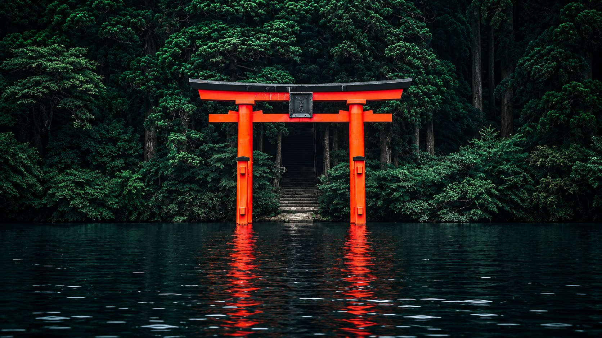

KYOTO · AUTUMN
紅葉の向こう、
京都の空へ。
Beyond the maples, Kyoto opens to the evening sky.
A QUIET STUDY OF KYOTO
朱の鳥居
The vermilion gate
Where mountain mist meets the sacred path.
伏見稲荷の森 / FUSHIMI INARI FOREST